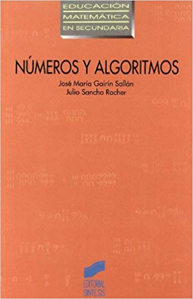

Los materiales manipulativos en el aprendizaje activo y significativo de las matemáticas
Pablo Beltrán-Pellicer
CPI Val de la Atalaya (María de Huerva), Universidad de Zaragoza
II Jornadas sobre materiales para el aula de matemáticas en primaria
4 de mayo de 2021


https://pbeltran.github.io/2021-manipulativos

Decepcionando de entrada
Una confusión frecuente es pensar, como docentes, que la didáctica nos va a decir cómo enseñar. Resulta que esto es objeto de debate actual entre la comunidad de investigadores.
- No se va a dar una lista de la compra.
- No se van a dar recetas mágicas, porque no existen.
- Y, por supuesto, tampoco creo que lo que se vaya a contar sea una gran novedad.
▶️▶️▶️


Fuente: Baroody (1989)
¿Son la solución milagrosa a lo que sea que ocurre en el aula de mates?
En palabras de Szendrei (1996). Los materiales educativos concretos no son drogas milagrosas. Su uso productivo requiere planificación y previsión.

Rotundamente, no.
Es necesario, como mínimo:
- Que manipulen algo familiar para ellos.
- Que reflexionen sobre las acciones físicas o evocadas que realizan con ellos.
¿Qué no entendemos por manipulativos?

Existen versiones «manipulativas» de esto. Por cierto, podríamos hablar de qué hablamos cuando hablamos de «medida».

Cuando se usan para elegir los números con que hacer una ficha de cuentas, claro.
Tipos de manipulativos
Por el uso que se les da…

Para tener algo que contar o a modo de fichas.

Actividad de estimación.
Físicos 🔸 Virtuales
Histórico-culturales 🔸 Artificiales
Estructurados 🔸 No estructurados
Por mencionar algo de los virtuales…
Los manipulativos cobran vida.

Conexión entre representaciones y de lo concreto con lo abstracto.
Precisión, escala, disponibilidad, etc.
Ábacos
Un mal uso es pensar en los manipulativos como una herramienta para calcular, en lugar de para aprender.

Esto es un ábaco aditivo (horizontal)

Esto es un ábaco posicional (vertical)
Regletas de Cuisenaire


Regletas de Cuisenaire


Fuente: Baroody (1993)
Regletas de Cuisenaire

Fuente: Szendrei (1996)
Números negativos
Algo que nos puede llevar a usar mal los manipulables es pensar que los conceptos matemáticos detrás de la manipulación se ven fácilmente. Para el alumnado no es tan evidente.
Por ejemplo, no existe ningún modelo concreto (manipulativo o evocado) que reproduzca de forma intuitiva la estructura de los números enteros. Los «no entiendo» de los alumnos tendrán que ver con la naturaleza del objeto matemático que hay detrás.

Los «no entiendo» de los alumnos tendrán que ver con la naturaleza del objeto matemático que hay detrás.
Algoritmos tradicionales de las operaciones
- Tienen su espacio en una secuencia desde la comprensión.
- Previamente, y en paralelo, se debe seguir privilegiando el cálculo oral y las situaciones concretas (problemas).
- Son algoritmos cuyo estudio permite ganar comprensión del sistema decimal posicional.

Una opción
Utilizar puntos, barras y placas para los de la suma y la resta.

Plantillas que usamos en @dm_unizar: puntos, barras y placas
Utilizar billetes u otro material estructurado de base 10 para la multiplicación y la división.
¿Tiene sentido?

¿Qué sentido tiene tener al alumnado bajando ceros de las nubes?
Si no profundizas en el significado de esas operaciones:
- O se hacen mentalmente con cualquier otra estrategia.
- O con calculadora.
Números


Números

Números racionales

Los diferentes significados son un conocimiento especializado.
- Parte-todo.
- Medida.
- Cociente.
- Razón.
- Probabilidad.
Números racionales

Materiales de SergioMJGR y auroradp64, basadas en trabajos de Escolano, Gairín y otros.
Números racionales

Números racionales

Números racionales

Geometría: áreas